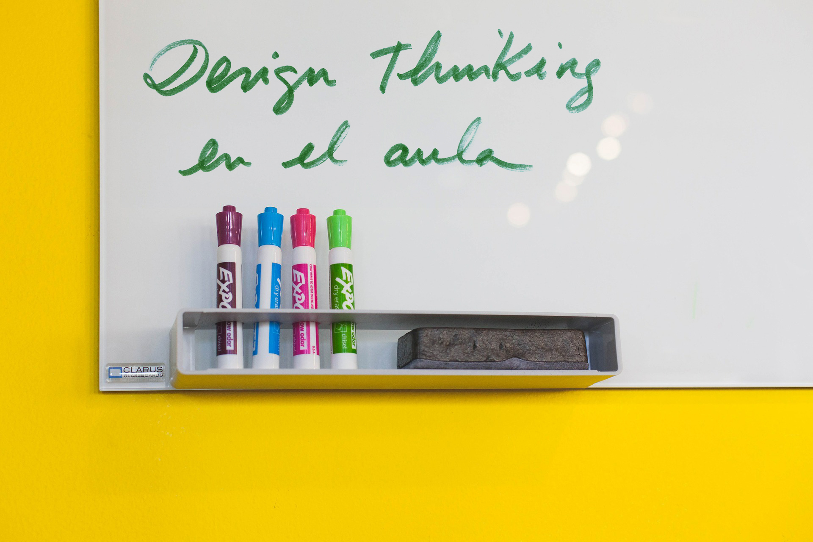

Introducción:

“Pensar como un diseñador puede transformar la forma en la que usted desarrolla sus productos, servicios, procesos y hasta su estrategia” Tim Brown
¿Un curso on-line sobre design thinking?
Os puede parecer extraño, y, lo cierto es que lo ideal es aprender haciendo, pero tiene una justificación. Este curso es el primer paso de una aventura, un camino que podréis recorrer para integrar la metodología Design Thinking como lenguaje común para la creatividad, la participación y la colaboración en el aula.
Pero antes, lo que pretendemos con este curso, fundamentalmente, es que te sirva de introducción y te anime a experimentar la metodología y que más adelante:
- Te plantees entrenar las habilidades necesarias para poder APLICARLA en el aula
- Te plantees que poco a poco forme parte de la ESTRATEGIA del proyecto educativo que trabajas y del aprendizaje de tu alumnado.
Pero antes de continuar explicando las motivaciones y objetivos del curso, voy a presentarme.
Soy Elena Bernia, una diseñadora a la que siempre le ha interesado la educación.
Aquí os pongo el enlace a mi curiculum vitae, por si alguien quiere saber más sobre mi trabajo y trayectoria: https://www.linkedin.com/in/elenabernia/
He diseñado este curso, (Es mi primer curso on-line, así que aprovecho para decirte que si quieres hacer alguna sugerencia de mejora, soy toda oídos!), con el interés y la atención de quién está aprendiendo del proceso, de la experiencia; con el objetivo de que el curso os pueda aportar una mirada que sume, complementaria y compatible con la que ya hayáis construído durante vuestros años de estudio y docencia.
He preparado este curso con la intención de que el proceso y las herramientas que aquí se explican, puedan encontrar un hueco en vuestro cinturón de herramientas para trabajar en el aula.
Pero sobretodo me interesa que observes la experiencia de aprendizaje de tu alumnado y que visualices que la evolución, la participación y la creatividad pueden llegar a vuestro entorno para quedarse. Y si ya están allí, vamos a poder potenciarlas.
También voy a ser, en esta primera edición, tu tutora. Corregiré los ejercicios prácticos y estaré a tu disposición para resolver dudas.
Como habrás podido intuir, un interés vocacional y la intención de aportar, trasluce en la preparación de este curso, que espero construyamos entre todas las personas que nos encontremos en él, como en un foro o una plaza de pueblo, en la que poder coincidir y sentir que podemos opinar, contar, compartir nuestras experiencias para trabajar juntos.
Te doy la bienvenida!

Design Thinking en educación por Elena Bernia bajo licencia Creative Commons Reconocimiento-NoComercial-CompartirIgual 4.0 Internacional License.